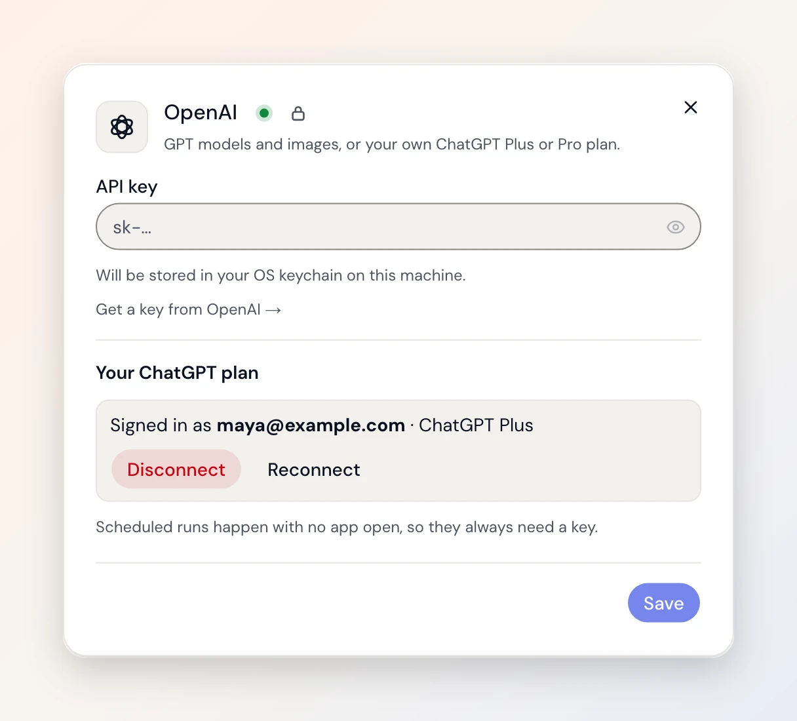

Insights
- When
- Someone asks why signups dropped this week.
- Today
- Five tabs, three hours, still a guess.
- With Duct
- It reads Ads, GA4 and Stripe together and answers with the change it proposes.
Duct reads your ads, analytics and revenue tools together, proposes the fix and applies it when you say so. On your Mac, with your own model keys or the ChatGPT plan you already pay for.
Free · No account, no credit card · Windows and Linux too
What it does

Twelve connectors. Ads, analytics, revenue and session replays, read together for one question.

It proposes the change, shows what it touches, and applies it only when you press Apply.

Targets, decisions and what it learned, on a timeline you can correct.

Model keys stay in your keychain. Or sign in with ChatGPT and skip the key entirely.
What it's for

FAQ
An open-source AI agent that connects your product, marketing and revenue tools, answers questions across them, proposes changes and applies them when you approve. It runs as a desktop app on macOS, Windows and Linux.
Yes. The core is MIT licensed and stays that way. You pay your model provider directly, or sign in with the ChatGPT plan you already have. A hosted team plan comes later; the core stays open.
No. Reporting works with read-only access. A change is proposed with what it touches, and applied only when you press Apply. Destructive changes are flagged; anything over a guardrail is blocked until you look.
Google Ads, Meta Ads, Apple Search Ads, OpenAI Ads, GA4, Search Console, Tag Manager, Mixpanel, Microsoft Clarity, GrowthBook, Stripe and RevenueCat. Every connection is OAuth; nothing is exported by hand.
Model keys stay in your operating system's keychain and travel with a request only while a job runs. Connector authorisations are stored encrypted by the hosted API. The desktop app is a thin shell over that API; a self-host build runs everything on your own machine. Why it's called Duct is on the about page.